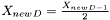
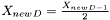
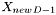
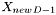
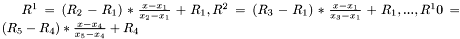

taper_base< D > Class Template Reference
[N-dimensional]
Base class for Taper classes, providing the actual taper() function.
More...
#include <Taper.H>
Public Member Functions | |
| taper_base (const vertex_data< D > &v) | |
| Create a taper_base object from an already existing object. | |
| void | taper (unsigned d) |
Execute the taper action of the previous object along axis d. | |
Private Member Functions | |
| bool | alreadyTapered () |
Private Attributes | |
| int | _previous_dim |
| Axis the previous taper() action went along. | |
| int | _pre_previous_dim |
| Axis the taper() action before the previous went along. | |
Detailed Description
template<unsigned D>
class taper_base< D >
Base class for Taper classes, providing the actual taper() function.
- Parameters:
-
D Dimension of the vector space we're working in
Member Function Documentation
| void taper_base< D >::taper | ( | unsigned | d | ) | [inline] |
Execute the taper action of the previous object along axis d.
Generally, a taper action is defined by the following formulas.
For going from a taper  to the next, only the st and
to the next, only the st and  th coordinate are affected.
th coordinate are affected.
The new point is extruded above the center of the st coordinate, thus  .
.
The th coordinate is found by spanning a right triangle with the sides  and  , and solving the pythagorean equation for the missing cathetus.
and  , and solving the pythagorean equation for the missing cathetus.
While these formulas are relatively easy, keep in mind that
- You must store previous taper actions to remember and
 .
. - If you haven't tapered at least twice before, you don't have values for and . Thus, you must make up these values. Luckily, this is possible:
- If we taper for the first time, the new point lies above the center of the old surface. We calculate the mean of all coordinates and extrude above that point. The coordinate is
 .
.  is considered to be equal to  in this function, because I don't see how it could have another value that makes sense.
is considered to be equal to  in this function, because I don't see how it could have another value that makes sense. - If we taper for the second time, we extrude above the center of the st coordinate, so the value for this is halved for the coordinate of the new point. The coordinate is  , because the second leg of the equilateral triangle was created by the first extrusion and is known to be of length .
- If we taper for the first time, the new point lies above the center of the old surface. We calculate the mean of all
- Parameters:
-
d The new dimension into which the object is tapered
If this is the first time we taper an object, we must extrude a new point above the middle of the old object. For all directions except the newly tapered one, the coordinate value is the mean of the old ones.
We can skip the test for the dimension tapered into, because it's all zero by definition anyway.
By Pythagoras! The coordinate tapered into is sqrt(1-1/2^2).
Copy the last tapered point. It serves as reference, because only the coordinate last tapered into changes (it is halved), in addition to the newly extruded point.
If we have extruded only once before, we know the short cathetus of the right triangle spanned by the back of the equilateral triangle to be 0.5 - half a unit, because it lies in the center of the previous object.
Consequently, in this dimension the new point lies in the center of the previous edge.
If we have stored at least two previous extrusions, the cathetus of the new triangle is defined by those.
Define surfaces now. Every two points from the old object are connected to the new point, thus spanning a surface.
References taper_base< D >::_pre_previous_dim, taper_base< D >::_previous_dim, vertex_data< D >::addSurface(), taper_base< D >::alreadyTapered(), std::vector< _Tp, _Alloc >::back(), vertex_data< D >::dimension(), fabs(), std::vector< _Tp, _Alloc >::push_back(), std::vector< _Tp, _Alloc >::size(), sqrt(), and vertex_data< D >::X().
Referenced by Taper< D, Dmin, Dmin >::Taper(), and Taper< D, Dmin, Dmax >::Taper().
| bool taper_base< D >::alreadyTapered | ( | ) | [inline, private] |
- Returns:
- Whether working on an object that's already a Taper.
References taper_base< D >::_previous_dim.
Referenced by taper_base< D >::taper().
The documentation for this class was generated from the following file:
- HyperspaceExplorer/src/Functions/Taper.H